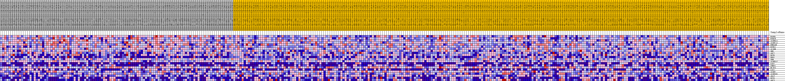
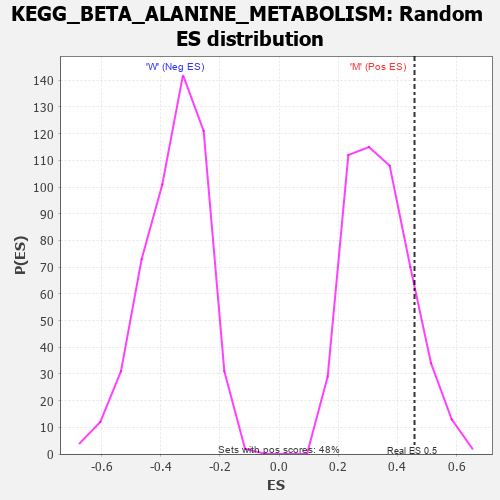

Profile of the Running ES Score & Positions of GeneSet Members on the Rank Ordered List
| Dataset | MUC16.MUC16.cls#M_versus_W.MUC16.cls#M_versus_W_repos |
| Phenotype | MUC16.cls#M_versus_W_repos |
| Upregulated in class | M |
| GeneSet | KEGG_BETA_ALANINE_METABOLISM |
| Enrichment Score (ES) | 0.4580403 |
| Normalized Enrichment Score (NES) | 1.3556215 |
| Nominal p-value | 0.13871635 |
| FDR q-value | 0.31313217 |
| FWER p-Value | 0.901 |
| PROBE | DESCRIPTION (from dataset) | GENE SYMBOL | GENE_TITLE | RANK IN GENE LIST | RANK METRIC SCORE | RUNNING ES | CORE ENRICHMENT | |
|---|---|---|---|---|---|---|---|---|
| 1 | HADHA | na | 129 | 0.225 | 0.1138 | Yes | ||
| 2 | HIBCH | na | 646 | 0.170 | 0.1921 | Yes | ||
| 3 | ALDH9A1 | na | 745 | 0.164 | 0.2749 | Yes | ||
| 4 | ALDH7A1 | na | 1791 | 0.122 | 0.3191 | Yes | ||
| 5 | EHHADH | na | 2634 | 0.103 | 0.3569 | Yes | ||
| 6 | ECHS1 | na | 2775 | 0.100 | 0.4063 | Yes | ||
| 7 | ACADM | na | 5195 | 0.067 | 0.3971 | Yes | ||
| 8 | SMS | na | 5517 | 0.064 | 0.4241 | Yes | ||
| 9 | AOC2 | na | 6400 | 0.055 | 0.4363 | Yes | ||
| 10 | DPYD | na | 7784 | 0.043 | 0.4335 | Yes | ||
| 11 | UPB1 | na | 8269 | 0.039 | 0.4448 | Yes | ||
| 12 | SRM | na | 8571 | 0.036 | 0.4580 | Yes | ||
| 13 | ALDH3A2 | na | 10048 | 0.024 | 0.4439 | No | ||
| 14 | GAD2 | na | 11844 | 0.012 | 0.4177 | No | ||
| 15 | CNDP1 | na | 20552 | -0.028 | 0.2743 | No | ||
| 16 | MLYCD | na | 21218 | -0.031 | 0.2782 | No | ||
| 17 | GAD1 | na | 25284 | -0.047 | 0.2290 | No | ||
| 18 | ALDH2 | na | 27469 | -0.055 | 0.2180 | No | ||
| 19 | ALDH1B1 | na | 42802 | -0.105 | -0.0052 | No | ||
| 20 | ABAT | na | 47120 | -0.123 | -0.0199 | No | ||
| 21 | DPYS | na | 47352 | -0.124 | 0.0400 | No | ||
| 22 | AOC3 | na | 54293 | -0.200 | 0.0176 | No |

